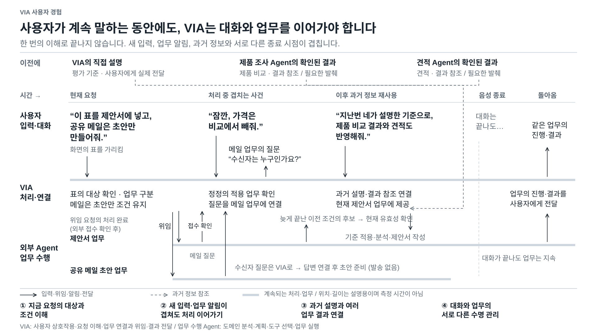
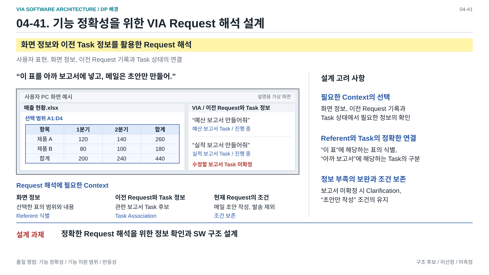
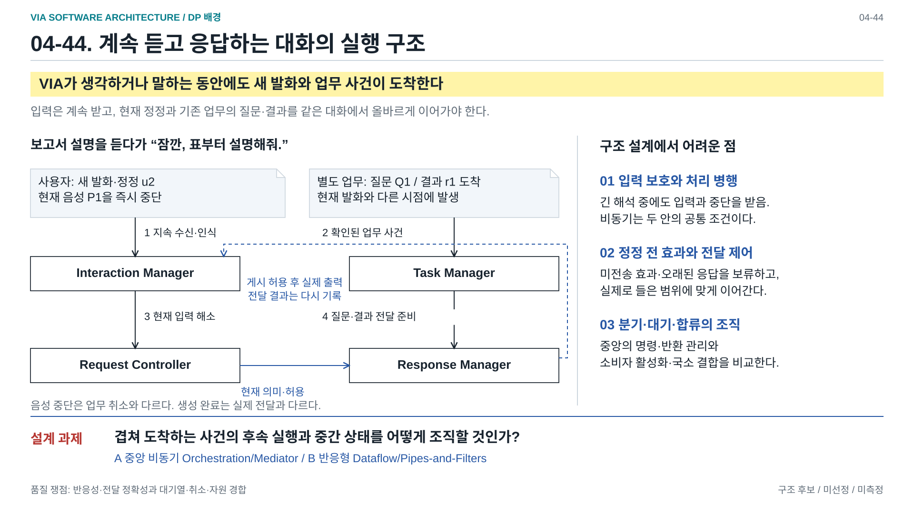
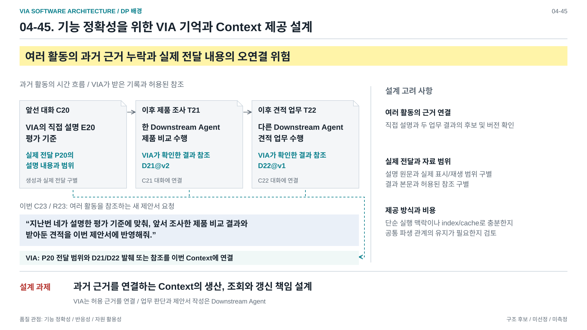
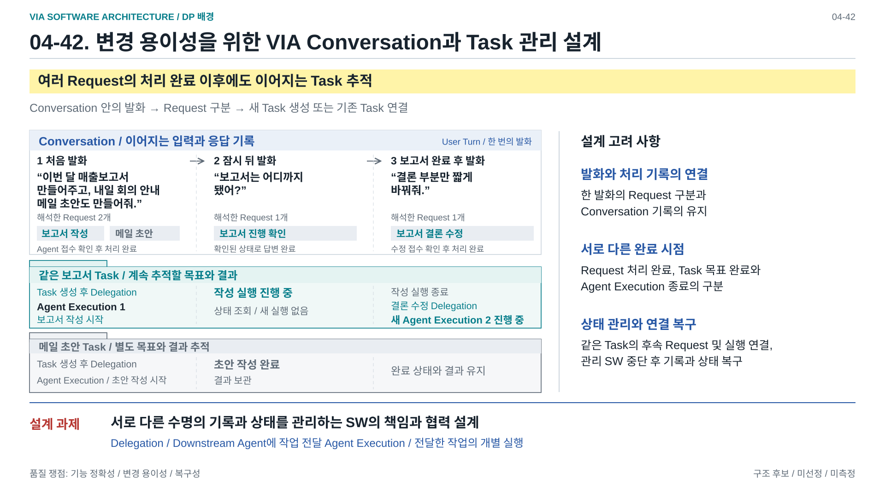
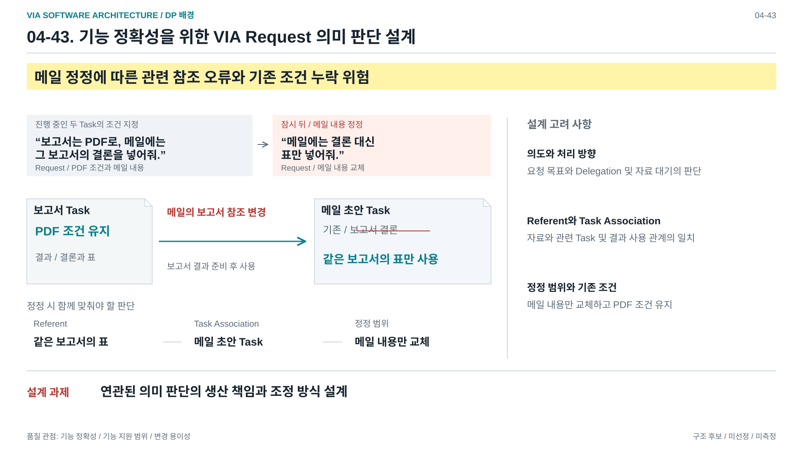

사용자가 계속 말하는 동안에도, VIA는 대화와 업무를 이어가야 합니다


04-41. 기능 정확성을 위한 VIA Request 해석 설계


04-44. 반응성을 위한 VIA 지속 입력과 Response 전달 설계


04-45. 기능 정확성을 위한 VIA 기억과 Context 제공 설계

45: VIA 직접 설명의 실제 전달 범위와 제품 비교/견적 결과 참조를 새 제안서 Context에 연결. 업무 판단과 작성은 Agent 책임. draw.io 원본 / PNG

04-42. 변경 용이성을 위한 VIA Conversation과 Task 관리 설계


보충 자료 — 04-43. 기능 정확성을 위한 VIA Request 의미 판단 설계
